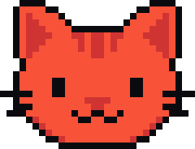

GatoPagoEnvío confirmado · ejemplo
−125,00USDC
PARATaller Norte · cuenta de ejemplo
- De
- Dani · cuenta de ejemplo
- Fecha
- 2 de octubre de 2026, 10:42 UTC
- Referencia
- GP-DEMO-1042
- Red
- Red de demostración, sin transacción
- Transacción
- No existe: muestra visual
Importe enviado125,00 USDC
Coste de ejemplo0,25 USDC
Total de ejemplo125,25 USDC
Datos ficticios. Esta muestra no acredita un pago, una transacción ni un saldo.